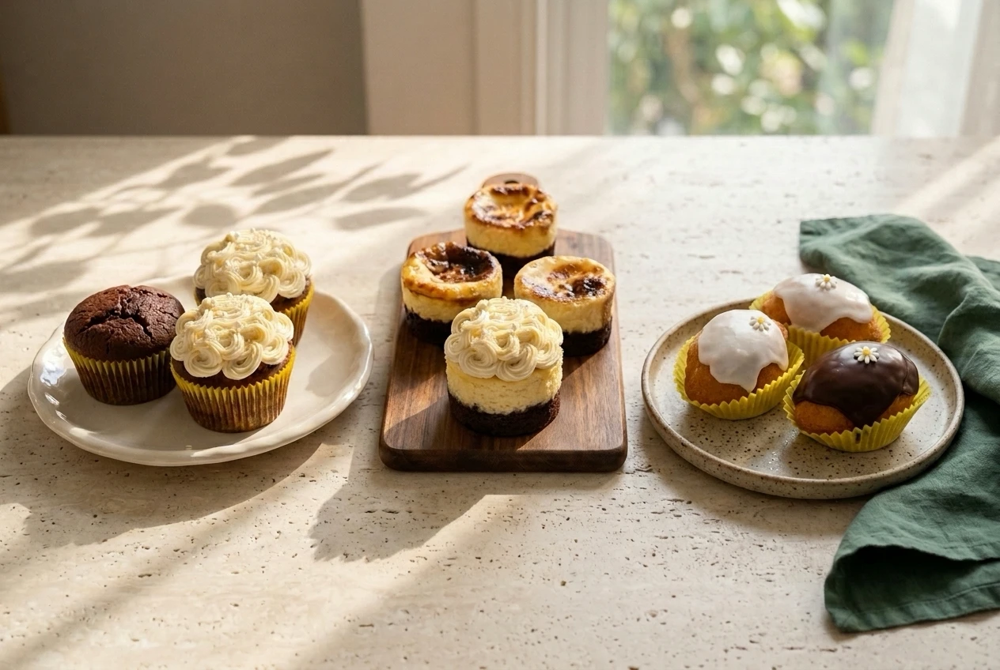
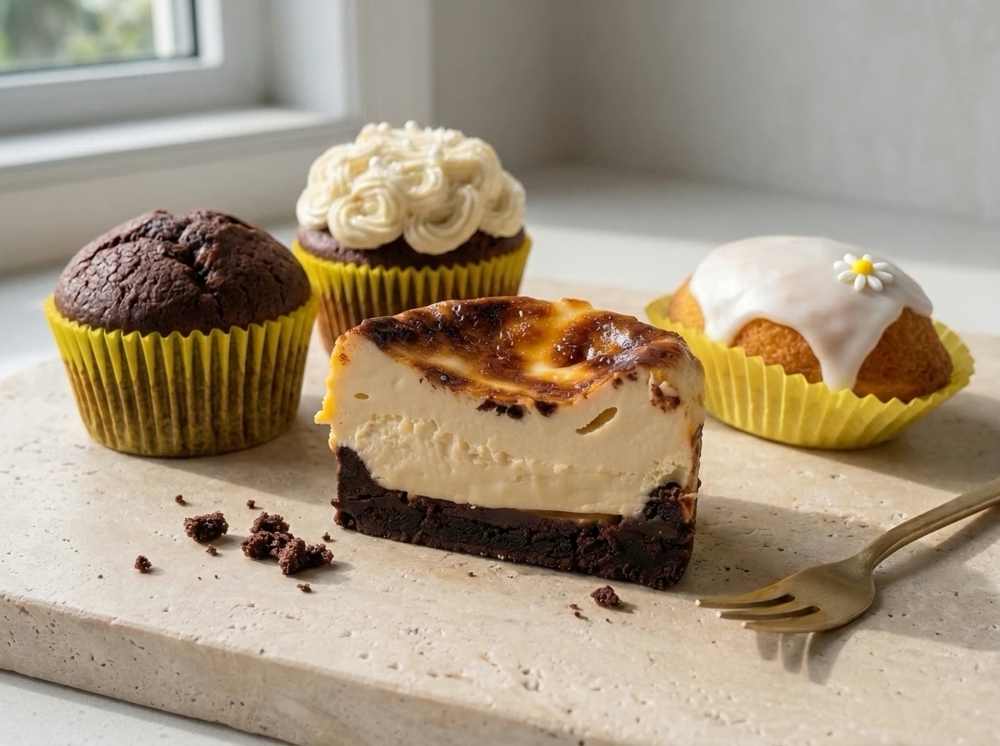
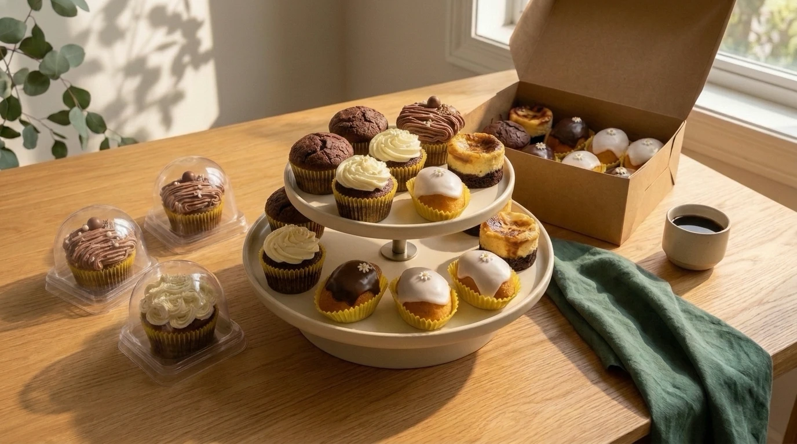

VERYGOOD JOURNAL · SMALL BITES & MINI DESSERT GUIDE
From classic Gâteau Cupcakes—served plain or crowned with real-vanilla fresh cream—to two-layer Brownie Basque Cupcakes and glazed Lemon Cakes, why single-serve bakes are reshaping Sydney celebrations.
Across Sydney cafés, birthday tables and office afternoon teas, the way people share dessert has quietly shifted. Instead of committing everyone to a large wedge of a single cake, modern hosts increasingly build spreads around individual mini desserts—often called small bites—that deliver full patisserie craft in a single-serve format.
The appeal is not about cutting corners on flavour; it is about variety and choice. Setting out three distinct mini-dessert profiles—chocolate-forward Gâteau Cupcakes, two-layer Brownie Basque Cheesecake Cupcakes and bright glazed Lemon Cakes—lets guests pick the exact texture and finish they feel like eating.
KEY TAKEAWAY · FULL PATISSERIE CRAFT IN ONE PORTION
Small bites let one table offer pure baked chocolate (Basic Gâteau Cupcake), fragrant dairy lightness (Vanilla Fresh Cream finish), two-layer Brownie Basque Cheesecake, and bright Lemon Cake without cutting a single wedge.

Three mini-dessert families side by side: Gâteau Cupcakes (Basic and Vanilla Fresh Cream), two-layer Brownie Basque Cheesecake Cupcakes, and glazed oval Lemon Cakes.
A well-made cupcake does not need towering frosting to feel complete. When the base is baked from a dense, chocolate-forward gâteau batter made with butter, eggs, milk, cocoa and wheat flour,[12] the cake itself carries enough depth to stand alone.
That gives hosts room to match the finish to the occasion—choosing the unadorned Basic baked chocolate dome for casual coffee breaks, crowning the cupcake with real-vanilla fresh cream rosettes for a lighter chilled finish,[7][24] or opting for silky Italian meringue chocolate buttercream.
GÂTEAU CUPCAKE ANATOMY · PLAIN DOME VS. PIPED CREAM FINISHES
BASIC FINISH
Pure Crackled Gâteau Dome
Our Signature Gâteau au Chocolat cupcake in its classic baked form.[12] Frosting-free, tidy to hold in a paper liner and ideal alongside espresso or office tea.
Because small bites are portioned individually, a single gathering table can offer contrasting pastry structures side by side without any slicing mess: a rich baked chocolate Gâteau Cupcake,[12] a two-layer Brownie Basque Cheesecake Cupcake, and a zesty oval Lemon Cake.
In our Brownie Basque Cupcakes, a fudgy dark chocolate brownie base[11] sits directly beneath a golden, caramelised Basque cheesecake layer[14]—delivering two contrasting textures in a single mini cake, either classic or topped with vanilla fresh cream.

Macro texture study: halved two-layer Brownie Basque Cheesecake Cupcake beside Basic and Vanilla Fresh Cream Gâteau Cupcakes and a glazed Lemon Cake.
SMALL BITES LINEUP · THREE DISTINCT TEXTURES FOR YOUR TABLE
CHOCOLATE GÂTEAU
Gâteau Cupcakes
Signature chocolate gâteau crumb in boxes of 6 or 12. Choose Basic, real-vanilla fresh cream, or Italian meringue chocolate buttercream.
Optional individual dome packaging available.
TWO-LAYER HYBRID
Brownie Basque Cupcakes
Rich dark chocolate brownie base[11] baked beneath a creamy Basque-style cheesecake top,[14] served classic or with vanilla fresh cream.
Two contrasting textures in one mini cake.
BRIGHT CITRUS
Lemon Cakes
Oval little cakes made with freshly squeezed lemon juice and zest across the batter, syrup and glaze (or dark chocolate finish).
Boxes of 6, 8, 12 or 16 pieces.
Another reason small bites suit modern gatherings is how cleanly they travel home. Choosing optional individual cupcake packaging places each cupcake inside its own clear protective dome box—turning a shared celebration spread into ready-to-carry thank-you gifts or desk drops without extra plates or wrapping.
MODERN HOSTING · THREE WAYS TO ORDER SMALL BITES
• Mix boxes by texture: Combine a box of chocolate Gâteau Cupcakes with a box of glazed Lemon Cakes so both chocolate lovers and citrus fans feel looked after.
• Respect chilled finishes: Keep Vanilla Fresh Cream cupcakes and cheesecake bites chilled below 5 °C until guests are ready to eat.[7][24]
• Check allergens across every box: Gâteau Cupcakes, Brownie Basque Cupcakes and Lemon Cakes all contain milk, egg and wheat (gluten); always confirm full ingredient and allergen details before ordering for guests with dietary needs.[23]
SHARED BOXES & INDIVIDUAL PODS · FSANZ ALLERGEN CHECK
Even when cupcakes are individually packaged for gifting or events, keep ingredient and allergen information available for recipients—our cupcakes and little cakes contain milk, egg and wheat (gluten).[23]

A modern Sydney small-bites spread: tiered Gâteau Cupcakes (Basic, Vanilla Fresh Cream and Chocolate Buttercream), Brownie Basque Cupcakes and Lemon Cakes alongside individual take-home dome boxes.
VERYGOOD CHOCOLATE · MELROSE PARK PICKUP · SYDNEY
Explore our Small Bites Collection (/celebrate) for pre-arranged pickup in Melrose Park, Sydney—including Gâteau Cupcakes (/cakes/chocolate-cupcakes), Lemon Cake boxes (/cakes/lemon-cake), Brownie Basque Cupcakes (/cakes/brownie-cupcakes) and S’more Sticks (/cakes/smore-stick)—or contact us to plan your next gathering.
[7] https://www.foodstandards.gov.au/business/food-safety/transporting-food-safely — FSANZ — Transporting food safely
[11] https://www.kingarthurbaking.com/blog/2025/05/21/types-of-brownies — King Arthur Baking — Types of brownies: fudgy, chewy, and cakey explained
[12] https://www.kingarthurbaking.com/learn/guides/cake — King Arthur Baking — Cake Guide
[14] https://www.kingarthurbaking.com/recipes/basque-cheesecake-tarta-de-queso-recipe — King Arthur Baking — Basque Cheesecake (Tarta de Queso)
[23] https://www.foodstandards.gov.au/consumer/labelling/allergen-labelling — FSANZ — Allergen labelling for consumers
[24] https://www.foodstandards.gov.au/business/food-safety/2-hour-4-hour-rule — FSANZ — 2-hour / 4-hour rule